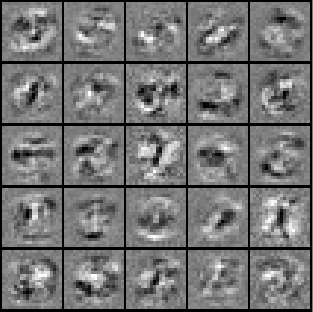

I just finished the 5th week of Stanford Machine Learning course: Neural Networks: Learning. Since this week’s course is a little bit difficult. I thought I might as well write something as a reminder, so that I could look back in the future.
I do feel that it is a powerful way to predict the outcome when there’s enough training data, hidden layers and intermediate neurons. A simple and practical neural network would consist of three layers: input layer, hidden layer, and output layer. Actually, one of the first versions of self-driving car was built on a three-layer neural network.
The forward propagation is straightforward and intuitive. On the other hand, it’s a bit difficult for me to grasp the concept of back propagation. The good news is that I somehow managed to understand the implementation.
The Neural Network Learning Algorithm on a high level
- Calculate the cost function, given multiple matrices of
thetas*(one matrice per layer). In the end, we should have a cost given thetas. The cost represents how “far” our prediction is from the “reality”. - Calculate the gradient (a.k.a. partial derivative) for each given theta. In the end, we should have a concrete numerical gradient value for each given theta. The back propagation take place on this step.
- With the ability to calculate the cost, and gradient for each theta, we can use one of the optimised functions such as fminunc (or gradient descent) to do the following iteration: random initial thetas –> calculate cost and gradients –> update thetas –> less cost and new gradients –> update thetas –> less cost and new gradients –> … —> until we get the minimum cost. This is a glorious moment when we get the optimised thetas, which allows the neural network to do the most accurate prediction.
theta is the weight of X, whereas X is the feature vector used to predict outcome.
Questions
Though I finished the assignment of this week, there are still some parts that I need to do more research on to understand better:
- What exactly does
δ (delta)represent in back propagation? - Why do we use derivative sigmoid function
g'(z)to calculate the δ (delta) from last layer back to the hidden layers? - Why
δ(l+1)*(a(l))Tis the gradient (a.k.a. partial derivative) matrice at l layer?
Accomplishment
- Built a neural network that recognises 1 - 9 digital number imagines with 96% accuracy.
- Visualized hidden layer images, each of which represents a row of theta in the input layer, who calculates one neuron in the hidden layer. There are 25 neurons in the hidden layer.
- 100% code score passed.
